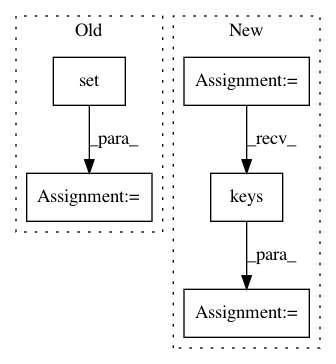

50aed730f4225f32e3a59407a4cb2552cbd08150,tensorflow_transform/saved/saved_transform_io_v2.py,SavedModelLoader,_apply_v2_transform_model,#SavedModelLoader#Any#,206
Before Change
feeds = object_identity.ObjectIdentitySet(self._func_graph.inputs)
unfed_input_keys = (
set(six.iterkeys(self._structured_inputs)) -
set(six.iterkeys(logical_input_map)))
for input_key in unfed_input_keys:
unfed_input_components = self._get_component_tensors(
self._structured_inputs[input_key])
feeds = feeds.difference(unfed_input_components)
modified_inputs = self._format_input_map_as_tensors(logical_input_map)
if unfed_input_keys:
batch_size = 1
if logical_input_map:
After Change
the transform graph.
unfed_input_keys = self._get_unfed_input_keys(logical_input_map.keys())
feeds = self._get_feeds(unfed_input_keys)
modified_inputs = self._format_input_map_as_tensors(logical_input_map)
if unfed_input_keys:
batch_size = 1
In pattern: SUPERPATTERN
Frequency: 4
Non-data size: 5
Instances
Project Name: tensorflow/transform
Commit Name: 50aed730f4225f32e3a59407a4cb2552cbd08150
Time: 2021-02-16
Author: varshaan@google.com
File Name: tensorflow_transform/saved/saved_transform_io_v2.py
Class Name: SavedModelLoader
Method Name: _apply_v2_transform_model
Project Name: Pinafore/qb
Commit Name: 7656aa73d5965d4b692fbcb321e2defc6bb0c16c
Time: 2017-02-19
Author: ski.rodriguez@gmail.com
File Name: wiki_network/prepare_data.py
Class Name:
Method Name: preprocess_titles
Project Name: openml/openml-python
Commit Name: c9dfcde8dfdb24597fb644088b1f469a6c923d96
Time: 2017-07-04
Author: janvanrijn@gmail.com
File Name: tests/test_runs/test_run_functions.py
Class Name: TestRun
Method Name: _check_fold_evaluations
Project Name: PyThaiNLP/pythainlp
Commit Name: 38ca4bc79aeb845f4c3a5db869ab5baca2a69eb1
Time: 2018-03-07
Author: wizer_boss@hotmail.com
File Name: pythainlp/tokenize/wordcutpy.py
Class Name:
Method Name: segment